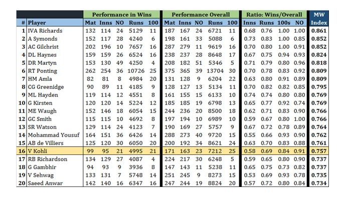

Dear reader, please upgrade to the latest version of IE to have a better reading experience
Dear reader, please upgrade to the latest version of IE to have a better reading experience
 Dear reader, please upgrade to the latest version of IE to have a better reading experience
Dear reader, please upgrade to the latest version of IE to have a better reading experience
Virat Kohli’s masterful chase against Australia a few days ago excited the cricket world beyond boundaries.
Everyone is now talking about how great Kohli is and how he compares to other batting legends. Newspapers have he is better than Sachin; Sambit Bal tweeted that he is to Pakistan what Miandad used to be to India; and social media forums are in a frenzy over comparisons with Viv Richards, Ponting, ABD, and others.
There is no doubt that he is an exceptional talent and a phenomenal batsman. There is no doubt in my mind that his unbeaten 80 odd against Australia was the best T20 knock I have ever witnessed. Kohli has played similar outstanding knocks in ODI cricket as well and he definitely is the king of all chases. No one builds an innings like him and certainly no one has won matches for India like Kohli has. In fact no one has won matches for anyone like Kohli has.
But how good is he really?
It is not only difficult but also quite inappropriate to compare batsmen of different eras. Limited overs cricket has changed so much in the favour of batsmen that averages and strike rates may sometimes appear inflated. Shorter boundaries, bigger bats, field restrictions, bouncer limitations, better pitches, and many other one-sided rules have resulted in a plethora of batsmen averaging above 50 in ODIs, which was unheard of in the 80s and 90s.
Plus, batsmen these days don’t face Wasim, Waqar, Garner, Marshall, Lillee, Thomson, Ambrose, Donald and the likes.
Currently, there are 7 batsmen who average above 50 in ODIs and only one of them (Bevan) made his debut in the 90s. In T20 cricket, there is only one batsman who averages above 40 – Virat Kohli – he averages 55.42! The next best T20 average is 38.96.
In terms of numbers, there are a few modern day ODI batsmen who are as good as Kohli, but there are none in T20 cricket. No one even comes close. His T20 average is 16 runs more than the next best. That is a significant difference and shows how well Kohli has mastered the art of batting in the shortest format.
Averages and strike rates cannot be compared across eras but there is one factor that can be definitely taken into account – the match-winning ability of batsmen. I believe that we can, to a fair degree, compare a batsman’s contribution to wins irrespective of era, conditions, rules, and opposition.
There are 50 batsmen that have scored around 4,000 runs in ODI wins. Sachin Tendulkar and Ricky Ponting are right at the top of this list with both scoring over 10,000 runs in wins.
In terms of average, Virat Kohli’s 67.5 in wins is third on the list, behind Hashim Amla’s 68.3 and Ms Dhoni’s 73.1.
These numbers individually represent greatness, however, the only way to compare the overall impact of a batsman in wins for his country is to develop an index that can take out biases with respect to era, conditions, rules, and opposition. While some bias may still remain, I tried to take into account 4 key factors to come up with the Match Winning Index (MWI); which is calculated as an average of these 4 factors:
Percentage of Innings played in wins
Percentage of runs scored in wins
Percentage of centuries in wins
Percentage of not outs in wins
(Important: When you take a percentage, you automatically rule out the absoluteness of a number. For example scoring 8-10 ODI centuries in the 80s is equivalent to about 15 centuries in the 90s and 25 centuries or more in the post 2000 era. However how many of them were scored in wins eliminates this bias. Moreover, a percentage of not outs is considered in order to eliminate the bias towards top order batsmen who have more opportunity to score centuries than lower order batsmen who may contribute a valuable 30 or 40 in a winning cause)
Here are the Top 20 match winning batsmen in ODIs.

Sir Viv Richards right at the top!
That should put to rest any discussion on whether Kohli is better than the best ever ODI batsman or not. Kohli ranks 16 on this list; however among Indian batsmen he is at the top. No other Indian batsmen has contributed to wins as much as Kohli has with only Gautam Gambhir and Virender Sehwag coming close to him. It is also fair to say that Kohli still has majority of his career ahead of him so we will surely witness this modern day great reach new heights.
While Kohli may not be as good as Viv Richards was, nor as good as many other modern day batsmen as an ODI match winner, he is the best India has produced. For comparison, Sachin (MWI of 0.655) ranks 43rd on this list.
It is interesting to note the high number of Australians at the top end of the table. As many as 6 of them played as part of the same team also. No wonder they won so many ODIs and lead the tally of most World Cup wins.
For Pakistan, Mohammad Yousuf and Saeed Anwar stand out but it is also interesting to see that Saleem Malik (0.728), Younis Khan (0.714), Shahid Afridi (0.711), Ijaz Ahmed (0.698), and Inzamam Ul Haq (0.687) were great contributors to ODI wins for Pakistan, hence the dominance in the 90s.
Coming back to Virat Kohli; it is a different story altogether when you compare the MWI for batsmen in T20 Internationals.
Barring Afghanistan’s happy-go-luck opener Mohammad Shahzad, Virat Kohli is the best in the business when it comes to winning T20 matches. He has the best ever T20 average, he is the only batsman to average above 40 in the format, and he has the best ever T20 average in wins.
Kohli is a T20 giant and a master of the format.
I can understand the euphoria created by that explosive and perfectly executed innings against Australia. We also tend to live in the moment and forget about other greats that have played the game. It is fair to say that Kohli is the best T20 batsman out there and the biggest T20 match winner the world has seen. It is also fair to say that he is the best ODI match winner produced by India; however he is some distance away from being the best in the world.
Kohli may well end his career as the best limited overs batsman ever and he may well be counted among the Test greats one day as well. But there is some time till that happens. For now, we should just enjoy his mastery and the ease with which he bats.
Umair Qazi is the founder of wellpitched.com, co-founder of the popular facebook group 'Boys in Green', and he tweets @wellpitched
Comments (109) Closed
Another huge facror must geography. A great player is great if he has proved his skills in all conditions. In other words let's not get too excited here. Despite all that they speak of Tendulkar after all these years he wasn't as big a match winner as others of his era. Kohli has only just started.
Batsman of immense talent is pride of Asia. Just keep away from any corruption and you have lot more to accomplish. Good luck.
Nice analysis. But in the end, what matters to the general public is the usual stats - number of run scored, number of centuries, etc..
Just like we don't analyze whether you won by 1 run or a whole inning.
Simplicity has it's own beauty.
Absolutely wonderful analysis Sir. Your number crunching is truly at the top. Your point is well taken. Kohli is a T20 specialist and might remain so. And comparing batsmen of different eras is not only difficult but deplorable. Each batsmen had their own style of playing and greatness which brought great joy to their fans which Kohli is replicating. Great joy is what watching batting master class is!!
Does this statistics take into account his test average as well? Matches : 41... Innings:72.... Not Out: 4....Runs: 2,994.....Balls Faced:5,657.... Highest: 169..... Average: 44.02....Strike Rate: 52.92..... 50's: 12...... 100's: 11.... 4s: 352...... 6s: 9..... Catches:36
No matter what conditions, Virat has always proven he is a master player!
Now a days ....virat fanfollowing is more than afridi fanfollowing in pakistan .....
There is an inherent flaw in using " scores in a win " for ranking players. Most of the matches won by the teams are due to contributions of 2 or 3 players and not a single player, especially in ODIs. That is the reason you see so many players in the ODI table above from the golden era of the Windies but not Brian Lara. Same applies to most of the Australian players in the list. Symonds and Gilchrist best ODI batsmen after Viv? No way.
Irrespective of what the analysis depicts, current generation and present time will only talk of Kohli, past is history, try to enjoy the present while one can... p.s. - like the batsmen, there are more 150 KM bowlers today then were in the past...
The writer has missed quantifying another extremely important question: How well a batsman performed or won the match, when the chips were really down, or high pressure situations. Another question could who is the best batsman while chasing a total. I have no doubt in my mind Kohli is one of the greatest ever. If not now, in a few years, people will acknowledge that he is better than Tendulkar and others...and by some distance.
Can u compare the pressure of today's crowd, media, social media, and to remain in team to past era... And the way he performs in such a high voltage atmosphere and how confident is he. . Have u ever seen ab other batsman in india and pak... esp he performs when teams it the most.. even Tendulkar used to give in to pressure. And usually wasn't the match winning performer. ..
Thanks for the data revealing the fact that Kohli is a very average player..
undoubtedly, kohli is the world-class batsman in current era. he has guts like miandad, class like sachin and aggressive attitude like sir viv richards. very tough physically and mentally.
Very nice analysis. But @ Ahmed Ali is right. Analyst needs to add another factor to account for type of match situation.
I would like to see his success rate outside sub continent. He is a good batsman but not very successful in Australia, New Zealand, England, South Africa or even in West Indies. I would still consider Hashim Amla, AB de Villiers better batsmen then him and I agree with him that batsmen these days don’t face Wasim, Waqar, Garner, Marshall, Lillee, Thomson, Ambrose, Donald and the likes.
Again this is a Team game and we don't want one individual responsible for Winning matches on their own. From Tendulkars perspective if he scored so many runs and still his team did not win as many matches does not speak well for the rest of the team.
Had kohli fallen few runs short India would have lost and we would be talking about what this would have been had someone else scored few runs etc etc. Good teams do not depend on one person so much.
@RIZ where on the earth do u live? Did you forget India's tour of Australia? He scored a fifty in all 3 T20 and was in tremendous form in ODI. jst google it man
Interesting article.
Conclusion of the story u win or not. Virat Kohli wins I do not care he gives result. He is a winner I am sorry but ABD is not. And others do not give result.
When you put 6 Australians of same era in that list you prove yourself wrong. It means there was no individual match winner but group of 6 players hunting together. So your comparison is 6 players v/s 1. Actual comparison would be how many matches each of these individuals won on their own. Means no significant contributions from others.
@Zulfiqar Kohli is the fastest man to complete 25 odi hundreds and you are saying he has just started ?? my god in a few years he will break all records possible in the history of mankind.
I have seen him batting and he is very good! My best wishes to him.
Sir, this like analysis is very relevant just at this moment..., that's why The Dawn is simply the best in Asia Pacific, I think... The design, the expressions are outstanding, I am a regular reader of our diferent Dailies like The Times of India, The NDTV,The Anandabazar Patrika etc. but the Dawn attracts more... I belong to North-East India...
I feel the analysis is flawed. winning is a collaborative effort. most of the times not possible by one person, you cannot expect a single player to bowl, bat and field to win matches. sir richards is a great batsman, there is no denying it, but he wouldn't have ended at top of list without the extraordinary bowling attack they had at that period. many of the australians ended up in the list because of superior bowling attack and nothing more
a player should be known for his technique, consistency and adaptability. if you need more evidence take this, Brian Lara is not in top 20, only a cricket illiterate would say he is not a great batsman. with so so indian bowling attack kohli ending in top 20 is itself an achievement. I feel it is foolishness to compare among cricket legends, every great cricketer is great in his own way. having said that kohli's technique and adaptability is matched by very less batsmen in world cricket and there is no denying this.
@RIZ Same goes for Amir, he was successful in bowler friendly tracks in BD but not so much in IND though pitches here too have not been that high scoring barring one and only batting paradise Wankhede pitch. Kohli has atleast 5 test tons out 0f 11 in AUS. Contribution in win is nill but it goes same for SL and PAK who along with IND are yet to win series in AUS.
@citizen says who? A self confessed critic? Fan of team who produces tailenders in the name of batsmen.
So in your analysis Symonds with 153 matches and only 6 centuries is 2nd best Odi Match winner. LOLZZ!!!! Flawed analysis man. Kohli has already raked up 25 tons. Greatness written all over him. It's just that you can't accept that an Indian is touted as the best of all time in limited overs. Surely his test numbers don't do justice to his talent, but am sure it will get boosted. Afterall the great ABD had an poor test avg of 37 after 40 games..look where he has taken his game. This era is Kohli era. IMO
Great analysis Umair, well written. I also feel that it isn't appropriate to compare Viv Richards with modern batsmen......he used to play aggressively in an era when the likes of Sunil Gavaskar scored 36 not out as an opener in a 60 over match!
Excellent analysis, although it is incorrect to assess the 'greatness' of players based on such measures. General public always tend to create legends based on their present sentiments and they always ignore the past. But when some cricketing experts and greats attempt to answer such invalid questions publicly, it is regrettable.
@RIZ Are you kidding. Have you watched his batting in Aus/NZ/SA? In Australia in fact he has achieved unprecedented success with nearly 400 runs,2 tons in 5 matches in the last concluded odi series and 4 tons in test series. His only failure was in England, Which I am sure he will rectify. The legend of Kohli has just started. Just wait for 5 years more. All kinds of batting records will be at his mercy.
Nice review by the author, yes no two batsmen can be compared. Kohli has charisma and ability to play ball everywhere. If you look at his stats he fares better than Sachin there but he is young and have to prove himself. We have to respect his current form and the current form proves he is best in the business including Pakistani bowlers.
Your Article reminds me of a famous French story...When someone demonstrated how practically one thing can be finished, french man asked. "OK..It will works well practically, but whether it will work theoretically?"
Interesting Perspective, in principle Kohli has to prove that he is better than Sir Viv. There is time on his hands to do that. There is a glaring logical flaw on your Analysis and the table. The MW index is a derivative on ratio of wins i.e. MW goes up if the team wins a direct strong heavily biased correlation. Unless Kohli has a team filled with Andy Roberts, Curtly Ambrose, Glenn Mcgrath he MW index is never going to climb up above the likes of others. If you are judging Batting merits and Batting abilities MW ratio can't be driven by performance of the other members of the team. Hope I made sense.
There are enough statistics available to selectively prove or debunk anything.
@भारतीय that's about it show me how many matches Test, ODI and T20s he played outside south Asia and what's his success rate. I bet you won't post these numbers :)
In this modern cricketing era,even bowlers likeGarner,lillee,thompsom,waqar,wasim,imaran,holding,ambrose,would have been wacked,smashed ,hammered by this prolific batsmen, Virat ,Ab devillers,Gayle. The present fast bowlers with speed 145 - 150kmph r getting badly hammered.
Stats are some times misleading. They do tell the various factors of conditions under which the player perormed. I regard Kohli to be better than Sachin as he plays for the country and not for personal records.
Nice
@RIZ he is more successful in Australia than in India.
Now do the chasing stats.
Kohli indeed is a great player, however, his performance in the current t20 WC might not be a true reflection of his talent as most of the matches are fixed. India has to reach the finals to so that the sponsors can make as much money as possible.
Best of Asia for now and soon will be best of world. Good luck and we love you in Pakistan. Love from Pakistan
@RIZ now they face more clever bowlers. Their weaknesses are checked through computers. By the way if he is an average batsman why are you so worried about him.
@wellpitched , a couple of points
@RIZ he is not successful in Aus? R u nuts? in the last 5 day odi series, he score 2 100s, 1 90s. Last T20 series in Aus he scored one 90s. Last test series in Aus, 4 centuries...
"Among indian batsmen only gambhir n sehwag come close in indian wins.... " All three are from Delhi.... :)
I have been following cricket since the late seventies. T20s were not played back in those days; so one day and test can be compared across eras (4 main eras, I would say). In one-day I think the best in the business in terms of dominating the opposition (not necessarily winning all the time) are: Viv Richards, Gordon Greenidge, Ricky Ponting, Virender Shehwag and Virat Kohli. A few others like, Sachin Tendulkar, Sourav Ganguly, Saeed Anwar, Desmond Haynes, Steve Waugh, Martin Crowe, Dean Jones, Mike Gatting, Adam Gilchrist are right up there. If I was asked to compare Virat Kohli to any other player; this would be Viv Richards - he is that good. He instills hope in team mates and fear in opposition.
What ever it might be but just has to to prove as per boom boom
Overall, a good effort by the author. I do think that the "Percentage of Innings played in wins" tends to favor batsmen playing on sides with strong bowling attacks - one reason I think why the list has so many WI, Aus and even Pak batsmen from an era when their bowlers were match winners. Also the 4 factors cannot be weighted equally, but I don't know what would be a good way of weighting the factors.
Let me delight the Pakistani friends who are Virat Kohli fans.
Kohli, is from a Punjabi khatri (Gakkhar) family, who are originally (few generations back) from Jhelum of north Punjab, which is in Pakistan. Kohlis speaking Potohari Punjabi at home.
Btw, I am very proud of Saddi Dilli da punjabi munda being considered among the best batsman ever. Punjabiyan di shaan vakhri!
Great job on analytically presenting your argument. This is kind of journalism that is needed in the subcontinent.
good analysis but not entirely correct.. As Australia has so many good players in the same team, so the team won and all of them look good in this kind of analysis... Someone like Tendulkar was a one man team and Indian team was so bad during most of his career and they became a good team only after Dhoni and others arrived.. so obviosuly he did not win as many games as he should have with that performance as rest of the team was below average... and the same with our team, we get one or two good players but overall team is very subpar...
Kohli is great but he has Dhoni and Indian bowling and fielding also improved significantly compared to Tendulkar's era and before that...
Agreed
You KNOW an analysis is flawed when it renders Gambhir superior to Sachin Tendulkar in ODI cricket. Anyone who has watched any cricket in the last 20 years will disagree with that. Arbitrary indexes can only take you so far. But nice try.
For me he is better than tendukar. I have seen innings of tendulkar as well as kholi. If tedulkar was on the pitch i wouldn't feel that secured but with kholi you assured he will take you to finish line
When you put Shazad on top of T20 list that means there is something wrong with this list. Similarly if you Martyn can be in top 10 for one day international, you know something is wrong with the list. If you notice your top one day list include, great West Indies team of 80s and great Australian team of 90's which means team itself was great therefore they win matches in that era (that is the reason many players in this list which are not top players. Tendulkar needs to be in top of any test or one day list and he may not able to win matches as cricket is a team game and he individually can play brilliantly but even then team will loose. Same case as Gavaskar. One day or t20 list which does not consider Dhoni in top 20 confirm something is wrong with the list.
It is not a good idea to compare players of different era so such lists are just a list as per writer opinion with data used as per his/her opinion.
@TC That's not the flaw in the ranking. A better way of looking at it would be what percentage a single player contributes to the total when the team wins. A fair figure would be 30% in that the top 6 should contribute about 80% of the total. This would be a good indicator of the batsman's net worth in the game.
@Ahmed Ali Sorry you are wrong. That is a subjective factor, not an objective one and hence cannot be measured.
@na ji na
That is not true. You are assuming that all batsmen fire in every win which is not possible or the case. If that is the case then they should rack up like 600 score in a one day intl. In most matches, one or may be two will outperform others and Aussies seemed to have some really good players and if one does not perform well, then someone else will.
Not quite a fair comparison, cricket is a team game. The number of % wins can not necessarily be attributed to a particular batsman. In case of Viv Richards and many other greats in the top of your list, there were great bowlers, fielders and offcourse other good batsman in the team. That needs to be factored in for a fare comparison.
Well if u look close enough, you would realise the top batsmen in your list had great bowlers to support their scorecards. Thus the wins. On the other hands sachin was one man army.. He scored and scored but bowlers let the team down. Now you telling me symonds or gilly is better than sachin lol, you better ask wasim or warne.
Pakistani batsmen should watch Kohli and learn technique from him. He is a master stroke player and his placement is phenomenal.
Umair, excellent analysis. Virat is good, but all this euphoria after one outstanding performance is over the top. We have to wait and see how he progresses in time.
Dont agree... Back in the day teams were mismatched.. Windies and Australia won insane amount of matches.. They were miles above other teams. Today the teams are better matched.. Every team can defeat each other on a give. Day.. Hence you see too many windies and aussie players in the list.
Also the past bowling greats were created by the lame batsmen of yester years.. Some of current batsmen cud be legends if they would be bowling in 1980s.
Good effort from the author, but no DHONI in the list for IDI's? something might be missing here. In my view DHONI has been the best finisher for India for ODI's
@سے Shaam (Hanafi) There were no speed guns in the past and there were more ferocious bowlers in the past with lesser bowling and fielding restrictions and lesser protective gear available.
What random trash. Is there any basis for this statistic? There are so many errors. E.g. if you are taking into account the percentage of wins- you are including the overall strength of the team in the figures- Viv had a wonderful bowling, of course his win ratio is the highest. Similarly Kohl's win ratio is highest for T20s and therefore he is high on the T20 list.
@Ajay Vikram Singh Wah wah! that was cherry on the top of the cake :)
Only time will tell where Kohli rates among the all-time greats. In the meantime, a good test is to look into your heart and decide whether you would want him in your team, or in the team opposing you. I have a feeling that given a chance, everyone on this forum would want him their side.
Flaw in the analysis is Viv Richards had Battery of the Best Bowlers in the World to support. Wining or loosing is team effort. It is better to Do calculation for loosing matches where the other batsmen or Bowlers have failed the guy has exceled.
These charts cant tell how good is kohli and how he is not the great yet.
But time and matches will ultimately do things..how he habdle the nerves like ind vs aus t20.
The past era batsmen cant be compared with modern era..
Hope i will see the new column of the same author about modern era greats..
And eager to see where kohli abd dhoni amla kane stands
Great analysis..
I work in analytic's which is fun. I've different customers ask different stats from the same data which I'll generate. The author generated numbers to prove his point, if he thinks he want to write Kohli is greatest of all-time he can do that also. Its called number game.
Gor consoling yourself ..analysis is good ...But everybody know ..Virat is best rt now
The fact is this that none of players he is being compared faced so many expectations, intense pressure and scrutiny as Kohli. One should never forget that Kohli grew up in India not facing best of bowlers either fast or spinners (India never had best of fast bowlers) yet he is facing best in business with confidence and authority at international level. He is very reliable and single handedly won matches for his team. There is more technology now to pick weaknesses of batsman than before but still he is proving too good for bowlers.
The worth of a batsman lies not in statistics, but how many hearts he won batting for his team. There is no quantifiable measurement for that. You can churn hundreds of statistical tid-bits for, nowadays, there is a dime-a-dozen analytical tool at your disposal. The fact of the matter is, a Zaheer Abbas wins the hearts of cricket fans of almost every country. Sachin revolutionized the idea of utter humility in greatness. Now, Virat is warming the hearts of people around the world, as of today. On his day, ABD does that, and Gayle does that too. They are universally acknowledged. So, just to prove some point that couldn't be proven, you rattle off reams and reams of statistics through cheaply available analytical tools. All I would say is, shove it.
It proves how wrong stats can be. For a team like Australia winning 90% of its matches provides opportunity for its batsmen to qualify but for any team losing 90% times team, its batsmen's performances in 90% matches do not count. That's the reason why Australians are dominating the list. Teams with better winning records get more batsmen in the list. Another point which makes difference is match winners in the team. A team with better bowling but one or two quality batsmen will provide opportunity for its only few to get qualify as bowlers restrict opposition for a low score and those one or two batsman scoring in low scoring chases. That's why Aussies and WI are topping the list.
@na ji na agreed the analysis is flawed to produce a preconceived result . I think comparing a number 3 player against other players that don't play that position is wrong as well . Number 5 , 6 ,7 players have a different role than 1,2,3 . The best gauge of a player's value is how many times has the player disappointed you .while it's hard to measure contribution it's easier to measure lack of contribution. While consistency gets interpreted as average there are nuances around average variances across conditions and opposition quality .
this article is just about twisting numbers. if u see in absolute numbers...kohli is catching up too fast and lemme remind u tat he still has a long career ahead. this article just shows that kohli's performance and appreciation in world media didnt go down well with you....thanks.
and since u r statistically so sound, u shud provide similar stats regarding the improvement of Pakistan cricket.lol
maths, algebra, geometry, geology, geography, chemistry, biology.. you used all the tools it seems and put so much hard work just to prove Virat is an avg batsman.
Very impressive article by Umair. Kohli is not only build innings he can able to finish also.
Excellent Analysis Umair.
@RIZ plz look at his performance in the last tour to Australi
@RIZ : He scored 4 centuries in all 4 tests in Australia.
Totally disagree with this stats So many errors and flaws
I'm die hard Sachin fan from Pakistan , he certainly one of the best w/o any doubts This analysis is stupid to place him 43rd lol
Writer himself says Sachin only to score 10k runs in winning along with ponting , isn't it enough ? I see most of the Indians and Pakistanis saying Sachin was never a match winner n simply writing off. Painful to see that Agree a bit , his contribution wasn't that great if u take % into consideration but 10k runs n centuries don't lie Taking his wicket means a sure shot victory for oppositions was a scenario back then. We Pakistanis always envied him , hated him for being that good ,his wicket was cheered more than anything. Surprised Indians writing off their legend too soon. Virat is exceptionally great batsman of his era. And he has a bright future But doesnt make sense u write off legends n make Virat as all time best or something. He's yet far from it
Remember Old is gold.
Why don't you consider man of the match awards.it will be a better factor example if a player perform extraordinarily but there are average players in the team. Team may will loose. .India Srilanka semi final in 1996 best example sachin scored 60 odd as he got out remaining batsman just couldn't play . if I remember correctly no body even reached double figure.to be fair pitch was difficult. . can u ignore such a innings it is not contributing to win but stands out
@RIZ he is really successfull in Australia. ...not so much in England. .but I must add England played superbly that series
Its not time yet to compare the stats of Kohli with the retired legends, he is not even half way mark of his career and yet he is in list of that elite panel, its time to just admire the 'genius at work' at the peak of his life, at the end of his career im sure nobody will be surprise if he has broken almost all the records in the cricking books of shorter format*..
i do not agree with the parameters for assessment in odis ..greatness of a player is in his performance .cricket is a team game wining or loosing should also consider how others perform..Sir Viv richards was part of a team who had 11 match winners even the players in the bench were match winners .taking nothing away from the great man. i will explain this with another example 1996 semi final India vs Srilanka Sachin Scored 60 odd in a difficult pitch no other batsman played well India lost but you cannot leave such a performance ,,also by your assessment Andrew Symonds is better than Ricky ponting and Mohammad Yusuf better than Miandad , Inzamam and saeed anwar in odis ?
speaking of Kholi he scored 4 centuries in a test series in Australia i don't remember which other batsmen did that ..including a century on 5th day ..which mark taylor while commentating said this is the best innings he has seen in his entire life
The author’s analysis is flawed - what about bowlers’ contribution towards MW Index of WI, Aussie and SA batsmen who reign supreme according to his stats?! India never had a consistent match winning bowling combination, neither during Sachin‘s era nor Kohli‘s. Whereas, WI, SA and Australia possess/ed some of the lethal bowling combo time and again! Despite this, Kohli had single-handedly guided India towards major victories. I value Kohli’s peers’ opinion on the matter rather than an armchair expert who is good in crunching numbers!
@Ajay Vikram Singh we have more talented batsman than Kohli trust me , our domestic cricket is 3rd class which doesn't allow grooming of such players India delivers a Kohli when you are the richest board in the world .better domestic infra structure and probably access to all world class facility if you dont perform well under such circumstances then you never will, Compare this to conditions in Pakistan ,India is still to prove herself in Test Cricket
there is one factor that has not been taken in to account. for eg, viv richards did not face the quality of bowling that others had to while playing against the west indies. similarly, the australians also did not face the quality of bowling that others faced while playing against australia. who knows, if the quality of bowling was similar, then the picture would have been different
If you are going to do analyses like this one, you have to wear the hat of an econometrist. In this exercise, you have completely ignored, attempting to even quantify the psychological texture of performance. You haven't taken into the consideration, the psychological impact of early wickets on the increased difficulty in playing shots. You haven't taken into account, the pressure of performance in one's own country, in front of home crowds. Unless you do that, this analyses is very limited and unintuitive.
To the author please answer you said batsmen these days wont face waqar or wasim. Have you imagine did waqar or wasim faced Kohli that time. If faced then they might be treated like ordinary bowlers in that era so please don't play era factor hear. In that era Sachin was there and he played great innings against these bowlers so no need to again justify kohli to any one
@Sujay , Kohli is not just T20s specialist look at his ODIs record he is far better player in ODI then T20s. Try correct yourself and the author too. You people are not aware about Kohli just google it.
@citizen mr citizen ask the pakistani team he is average or not he will say to you , do pakistan hav anyone like him noww anguurr khatte hai
I am surprised that Miandad did not make the ODI list.The best Pakistani batsman is Md Yusuf who I think did not get enough credit for his efforts in Pakistan. The question is was Yusuf really the best Pakistani batsman of his generation ? In the same way, Sachin & Lara do not appear on the list. I suspect there is a need to dig deeper & the parameters used may not be correct.
According to Imran Khan....Sunil Gavaskar the all time best batsman
This is not conclusive. This Stats does not give the true picture.
Viv Richards is on top as he had a terrific bowlers who would win the matches.
No Tendulkar in the list as he was the only one to score for India and played during times when India had ordinary bowlers. When Tendulkar would be out during chase, there was no chance India would win. Maximum MOM awards vouch for that.
Umar Akmal is way better than Kohli.. Unfortunately, just like Brian Lara was, Umar is stuck with a bunch of losers as his teammates
First and the most important thing while comparing Sachin or Virat with other greats is that they never needed to face their own deadliest bowlers and had the liberty to muster weak indian bowling attack whereas Sachin and Virat required/s to face deadliest bowlers from other teams and could/can not face toothless indian bowling so that they can improve their average even further.
Whether Richards anytime faced pressure what Tendulkar or Virat kohli faced ?... I doubt, In richards ear, WI bowling attack was the most fearsome & richards never faced it in comparison he faced weak bowling attacks... when richards come to bat, on 95% occassions WI openers Haynes and Grinidge gave 100+ opening partnership, after they demolished the bowling attack, Richards comes to bat therefore no pressure situation was experience by Richarchards,... That's why IMO Gavaskar was the best amongst all... he successfully faced WI & Aus fearsome attack of 80s.....
@TC thank you, you gave words to my thoughts. Mhd Yosuf better than Sehwag Saeed Anwar Dravid wow
@RIZ Check his record in recently concluded Ind-Aus series played down under.
@Nobody "Umar Akmal is way better than Kohli"
Dude, which world are you living in? Kohli has scored 3 times more runs than Akmal & Kohli's batting average is 30 runs more than Akmal in T20s & 20 runs more than Akmal in ODI.
@Nobody "Umar Akmal is way better than Kohli."
Please excuse me while I go laugh at this joke for 3 days
@Vinay yes u r right virat fllowers are any in pakistan and feel happy to his performance.
some times he make me remind Arvind Disilva